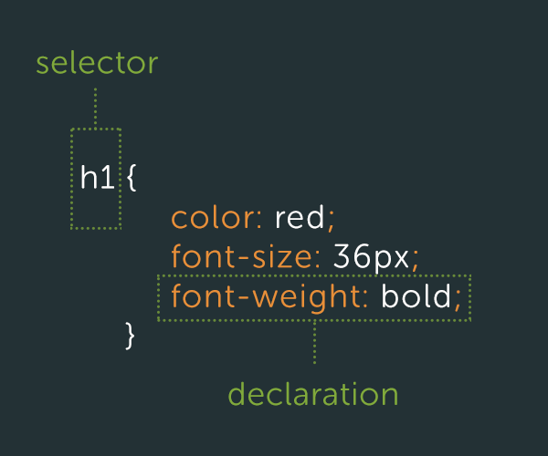

Gabriel Cziprusz | @gcziprusz
CSS forethought
=
painful to maintain CSS
Automated CSS testing = 
Regression  's
's
No good excuses to write bad CSS in 2014
Few iterations later we had a stylesheet strategy
CSS is really easy
How hard can it be
html + css = site
1 CSS file and hack away
Keep adding to the bottom
Result = 8000+ lines
.controlPanel-menuHolder .controlPanel-column,
.controlPanel-menuHolder ul.controlPanel-column,
.controlPanel-menuHolder ul.controlPanel-rootHolder {
margin: 0;
padding: 0;
background: transparent;
float: left;
}
.controlPanel-menuHolder a.rootActive-Link,
.controlPanel-menuHolder a.rootActive-Link:link,
.controlPanel-menuHolder a.rootActive-Link:visited,
.controlPanel-menuHolder a.controlPanel-rootLink:hover,
.controlPanel-menuHolder li.controlPanel-logo:hover a.controlPanel-rootLink,
.controlPanel-menuHolder li.controlPanel-logo:hover a.controlPanel-rootLink:link,
.controlPanel-menuHolder li.controlPanel-logo:hover a.controlPanel-rootLink:visited{
background: #414448;
border-color: #000;
border-bottom-color: transparent;
}
div.Template_StaffDirectory ul.SocialNetwork li div{
font-size: 10px;
line-height: 12px;
}Ad-hoc style development

Where do we go from here?

/*** DO NOT EVER CHANGE THIS !!!! ***/Can't hack our way out
Time to rethink our approach
Need architecture
SMACSS
Organizational system
150 source files
lonelyplanet.com is served by 10 distinct applications
CSS is minified + distributed in 2 files
core.css includes fonts, grids and header/footer
app.css includes specific application styles + non core components
What are we going to write?
limitations of css
syntactic sugar
variables, functions(mixins), conditionals and loops
Preprocessors
It is a CSS language extension
preproccessed language -> CSS
SASS LESS STYLUS
SASS .sass + .scss
.SCSS
$primary-color: #333;
body { color: $primary-color; }
.SASS
primary-color: #333
body
color: $primary-colorSASS maintainability ++
@mixin respond-to($breakpoint)
@media only screen and (min-width : #{$breakpoint}px)
@content
.nav
width: 100%
+respond-to(narrow-view)
width: 50px
float: leftvendor prefix hell
mixins, js solutions (prefixfree), postprocessing
Autoprefixer
.box{
-webkit-border-radius: 5px;
-moz-border-radius: 5px;
border-radius: 5px;
}
@mixin border-radius($radius) {
-webkit-border-radius: $radius;
-moz-border-radius: $radius;
border-radius: $radius;
}
.box { @include border-radius(10px); }
.box
border-radius: 5px